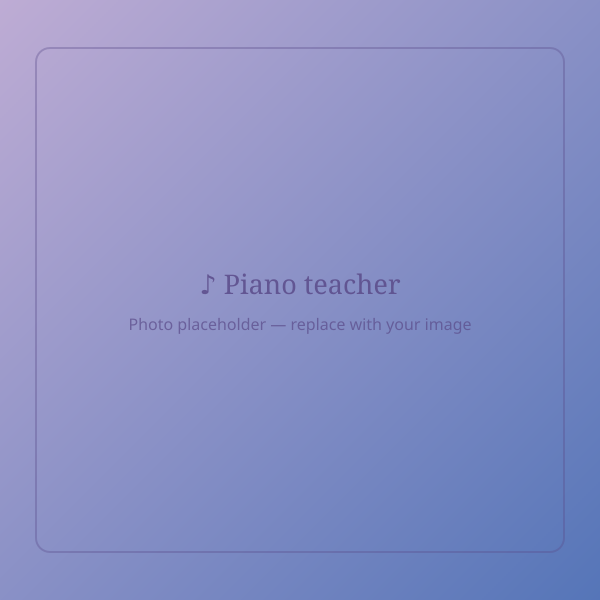

Kaja Czabańska
Pianistka · Flenistka · Pedagog · Muzykoterapeutka
Absolwentka Akademii Muzycznej im. Feliksa Nowowiejskiego w Bydgoszczy, Wydziału Kompozycji i Teorii Muzyki. Od lat zajmuje się edukacją muzyczną dzieci i dorosłych, łącząc doświadczenie artystyczne z pedagogiką i muzykoterapią. W swojej pracy stawia na kreatywność, swobodę i indywidualny rozwój.